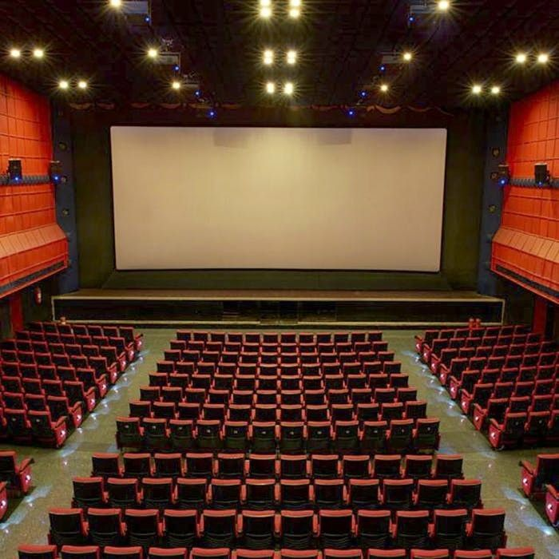

مهرجان دمشق السينمائي
تاريخ: 15 نوفمبر 2026
مكان: دار الحرية للثقافة
مدة الفعالية: 10 أيام
وصف: أحد أهم المهرجانات السينمائية في سوريا، يستضيف أفلاماً عربية ودولية ويحضره مخرجون ونقاد سينمائيون. يتضمن المهرجان عروضاً حصرية وندوات مع صناع السينما.